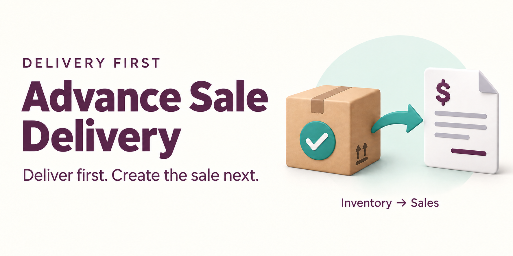

<section class="oe_container">
    <div class="container py-4" style="font-family:Arial,Helvetica,sans-serif; color:#343a40;">
        <div class="row">
            <div class="col-12 mb-4">
                
            </div>
        </div>

        <div class="text-center px-3 py-4">
            <p style="color:#714b67; font-size:13px; font-weight:700;">INVENTORY FIRST &middot; CONNECTED SALES</p>
            <h1 style="color:#212529; font-size:36px; font-weight:700;">Goods delivered. Sales connected.</h1>
            <p class="mt-3" style="color:#495057; font-size:19px;">
                Your customer needs the goods before the sales order is ready.
                Start with an Advance Delivery, then create the sale from what actually left your warehouse.
            </p>
            <div class="my-4">
                <span class="badge px-3 py-2 m-1" style="color:#714b67; border:1px solid #dee2e6;">Odoo 18 Community</span>
                <span class="badge px-3 py-2 m-1" style="color:#714b67; border:1px solid #dee2e6;">Inventory + Sales</span>
                <span class="badge px-3 py-2 m-1" style="color:#714b67; border:1px solid #dee2e6;">LGPL-3</span>
            </div>
        </div>

        <div class="row mb-4">
            <div class="col-md-4 mb-3">
                <div class="h-100 p-4" style="border:1px solid #dee2e6; border-radius:12px;">
                    <h2 style="color:#212529; font-size:22px; font-weight:700;">Start with the delivery</h2>
                    <p style="color:#495057; font-size:16px;">Record and validate outgoing goods in Inventory before creating a sales quotation.</p>
                </div>
            </div>
            <div class="col-md-4 mb-3">
                <div class="h-100 p-4" style="border:1px solid #dee2e6; border-radius:12px;">
                    <h2 style="color:#212529; font-size:22px; font-weight:700;">Price what was delivered</h2>
                    <p style="color:#495057; font-size:16px;">Generate the sale lines from delivered quantities. Edit prices, discounts and taxes using standard Odoo controls.</p>
                </div>
            </div>
            <div class="col-md-4 mb-3">
                <div class="h-100 p-4" style="border:1px solid #dee2e6; border-radius:12px;">
                    <h2 style="color:#212529; font-size:22px; font-weight:700;">Avoid a second delivery</h2>
                    <p style="color:#495057; font-size:16px;">Confirming the sale does not generate another delivery for the original items. Extra sale lines follow the normal delivery process.</p>
                </div>
            </div>
        </div>

        <div class="py-4">
            <div class="text-center mb-4">
                <p style="color:#714b67; font-size:13px; font-weight:700;">YOUR WORKFLOW, STEP BY STEP</p>
                <h2 style="color:#212529; font-size:30px; font-weight:700;">From the warehouse to the sales order.</h2>
            </div>
            <div class="row">
                <div class="col-md-6 mb-4">
                    <div class="h-100 p-4" style="border-left:3px solid #714b67;">
                        <p style="color:#714b67; font-size:24px; font-weight:700;">01</p>
                        <h3 style="color:#212529; font-size:22px; font-weight:700;">Create an Advance Delivery</h3>
                        <p style="color:#495057; font-size:16px;">Go to <strong>Inventory &rarr; Operations &rarr; Advance Deliveries</strong>, beside Deliveries. Choose the customer, warehouse operation and products.</p>
                    </div>
                </div>
                <div class="col-md-6 mb-4">
                    <div class="h-100 p-4" style="border-left:3px solid #714b67;">
                        <p style="color:#714b67; font-size:24px; font-weight:700;">02</p>
                        <h3 style="color:#212529; font-size:22px; font-weight:700;">Validate the goods sent</h3>
                        <p style="color:#495057; font-size:16px;">Complete the transfer with Odoo's standard stock, lot and serial-number controls. Sale creation becomes available after validation.</p>
                    </div>
                </div>
                <div class="col-md-6 mb-4">
                    <div class="h-100 p-4" style="border-left:3px solid #087f83;">
                        <p style="color:#087f83; font-size:24px; font-weight:700;">03</p>
                        <h3 style="color:#212529; font-size:22px; font-weight:700;">Click Create Advance Sale</h3>
                        <p style="color:#495057; font-size:16px;">Open a new draft quotation with the delivered products, units and actual quantities. The customer, company and warehouse come from the delivery.</p>
                    </div>
                </div>
                <div class="col-md-6 mb-4">
                    <div class="h-100 p-4" style="border-left:3px solid #087f83;">
                        <p style="color:#087f83; font-size:24px; font-weight:700;">04</p>
                        <h3 style="color:#212529; font-size:22px; font-weight:700;">Review pricing, confirm and invoice</h3>
                        <p style="color:#495057; font-size:16px;">Adjust commercial details, confirm through standard Sales and invoice according to the products' invoicing policies. Add extra sale lines when the customer needs more goods.</p>
                    </div>
                </div>
            </div>
        </div>

        <div class="p-4 my-4" style="border:1px solid #dee2e6; border-radius:12px;">
            <p style="color:#714b67; font-size:13px; font-weight:700;">A PRACTICAL EXAMPLE</p>
            <h2 style="color:#212529; font-size:28px; font-weight:700;">Deliver 10 today. Sell 2 more later.</h2>
            <div class="row mt-4">
                <div class="col-md-4 mb-3">
                    <h3 style="color:#212529; font-size:20px; font-weight:700;">10 units delivered</h3>
                    <p style="color:#495057; font-size:16px;">Validate the Advance Delivery for 10 units. Create its Advance Sale with a generated line for those 10 units.</p>
                </div>
                <div class="col-md-4 mb-3">
                    <h3 style="color:#212529; font-size:20px; font-weight:700;">Pricing stays flexible</h3>
                    <p style="color:#495057; font-size:16px;">Update the unit price or discount. The delivered quantity stays at 10, and the original delivery remains linked.</p>
                </div>
                <div class="col-md-4 mb-3">
                    <h3 style="color:#212529; font-size:20px; font-weight:700;">2 units on a new line</h3>
                    <p style="color:#495057; font-size:16px;">Add a separate sale line for 2 more units. Standard Odoo routes handle the additional delivery without sending the original 10 again.</p>
                </div>
            </div>
        </div>

        <div class="py-4">
            <h2 class="text-center mb-4" style="color:#212529; font-size:30px; font-weight:700;">Clear records. Controlled quantities.</h2>
            <div class="row">
                <div class="col-md-6 mb-4">
                    <h3 style="color:#714b67; font-size:22px; font-weight:700;">What stays protected</h3>
                    <ul class="pl-3" style="color:#495057; font-size:16px;">
                        <li class="mb-2">Delivered quantity on each generated sale line.</li>
                        <li class="mb-2">The delivered product, unit and source delivery link.</li>
                        <li class="mb-2">Deletion of generated lines and their source sale.</li>
                        <li class="mb-2">The linked delivery's customer and company consistency.</li>
                    </ul>
                    <p style="color:#495057; font-size:15px;">Backend checks protect the delivered quantities as well as the form's read-only fields.</p>
                </div>
                <div class="col-md-6 mb-4">
                    <h3 style="color:#714b67; font-size:22px; font-weight:700;">What remains flexible</h3>
                    <ul class="pl-3" style="color:#495057; font-size:16px;">
                        <li class="mb-2">Unit prices, discounts and taxes under standard Odoo rules.</li>
                        <li class="mb-2">Line descriptions and other commercial details.</li>
                        <li class="mb-2">New sale lines for additional products or quantities.</li>
                        <li class="mb-2">Standard quotation confirmation and invoice creation.</li>
                    </ul>
                    <p style="color:#495057; font-size:15px;">Regular sale lines retain their normal editing behavior. Odoo's own order-lock and invoicing restrictions still apply.</p>
                </div>
            </div>
        </div>

        <div class="row py-3">
            <div class="col-md-6 mb-4">
                <h3 style="color:#212529; font-size:22px; font-weight:700;">Follow the original delivery</h3>
                <p style="color:#495057; font-size:16px;">Use the sale's standard <strong>Delivery</strong> smart button to see the original transfer. Use <strong>Open Advance Sale</strong> on the delivery to return to its quotation or order.</p>
                <p style="color:#495057; font-size:16px;">One Advance Delivery generates one sale. Repeated creation clicks open the existing sale.</p>
            </div>
            <div class="col-md-6 mb-4">
                <h3 style="color:#212529; font-size:22px; font-weight:700;">Find advance records quickly</h3>
                <p style="color:#495057; font-size:16px;">Use <strong>Sales &rarr; Orders &rarr; Advance Sales</strong> or the <strong>Advance Sale</strong> search filter. Ribbons identify Advance Sales and Advance Deliveries on their forms.</p>
                <p style="color:#495057; font-size:16px;">Normal, unlocked Draft or Sent quotations also have a <strong>Convert to Advance Sale</strong> button.</p>
            </div>
        </div>

        <div class="p-4 my-4" style="border:1px solid #dee2e6; border-radius:12px;">
            <h2 style="color:#212529; font-size:28px; font-weight:700;">Before you start</h2>
            <ul class="pl-3 mt-3" style="color:#495057; font-size:16px;">
                <li class="mb-2">Designed for Odoo 18 Community with Sales and Inventory integration. No Enterprise addon dependency.</li>
                <li class="mb-2">Configure a warehouse and an outgoing operation type. Select the appropriate operation when using multiple warehouses.</li>
                <li class="mb-2">Users creating the linked sale need both Inventory and Sales access.</li>
                <li class="mb-2">Set a customer and validate the Advance Delivery before creating its sale.</li>
                <li class="mb-2">Initial prices and taxes come from standard Odoo sales defaults for the customer; review them before confirmation.</li>
            </ul>
        </div>

        <div class="py-4">
            <h2 class="mb-4" style="color:#212529; font-size:28px; font-weight:700;">Common questions</h2>
            <h3 style="color:#212529; font-size:19px; font-weight:700;">Does Advance Sale mean an advance payment?</h3>
            <p style="color:#495057; font-size:16px;">Here it means goods are delivered before the sales order is created. This module does not add a new advance-payment workflow.</p>
            <h3 style="color:#212529; font-size:19px; font-weight:700;">Will confirming the sale deliver the same items again?</h3>
            <p style="color:#495057; font-size:16px;">No. Generated lines are linked to the completed delivery and excluded from new procurement. Additional sale lines use standard Odoo delivery rules.</p>
            <h3 style="color:#212529; font-size:19px; font-weight:700;">What happens to undelivered items?</h3>
            <p style="color:#495057; font-size:16px;">Only completed moves with a positive delivered quantity are included. A backorder is a separate transfer and can generate its own sale after validation.</p>
            <h3 style="color:#212529; font-size:19px; font-weight:700;">Can I change the delivered quantity on the sale?</h3>
            <p style="color:#495057; font-size:16px;">No. Add another sale line for additional goods. For goods returned by the customer, use Odoo's stock return workflow.</p>
            <h3 style="color:#212529; font-size:19px; font-weight:700;">Does this replace normal Sales?</h3>
            <p style="color:#495057; font-size:16px;">No. It extends standard Odoo orders and deliveries. Your regular quotation, sales, stock and invoicing workflows remain available.</p>
        </div>

        <div class="text-center p-4 my-3" style="border-top:1px solid #dee2e6;">
            <h2 style="color:#212529; font-size:26px; font-weight:700;">Questions about your delivery workflow?</h2>
            <p style="color:#495057; font-size:16px;">Contact Mitchel Admin for module and installation enquiries.</p>
            <a href="mailto:erpmitchellodoo@gmail.com" style="color:#714b67; font-size:17px; font-weight:700;">erpmitchellodoo@gmail.com</a>
            <p class="mt-3" style="color:#495057; font-size:14px;">Advance Sale Delivery &middot; Odoo 18 &middot; LGPL-3</p>
        </div>
    </div>
</section>
